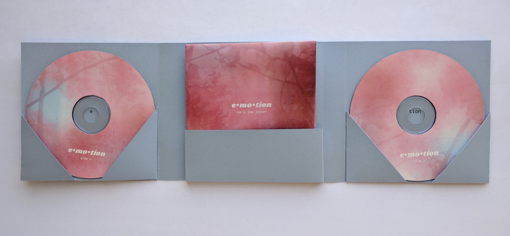
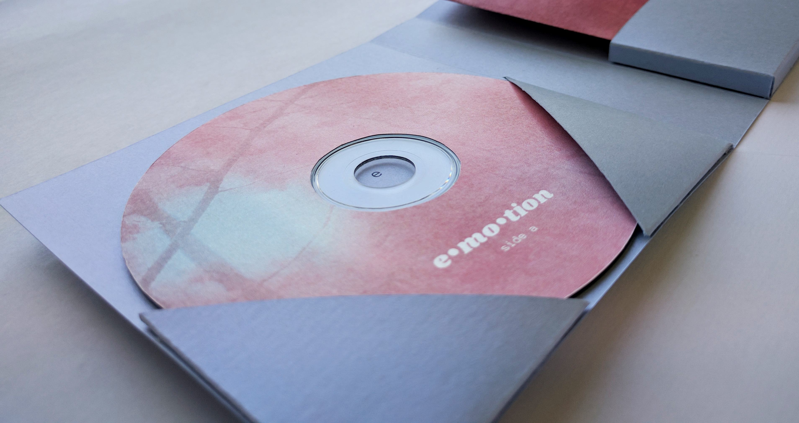
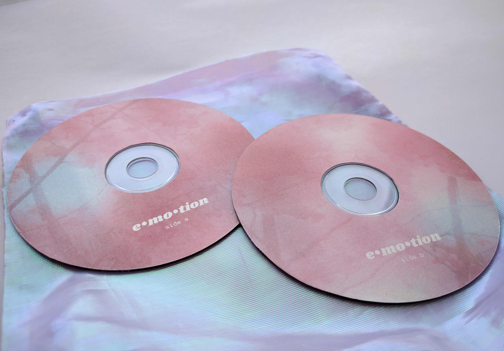
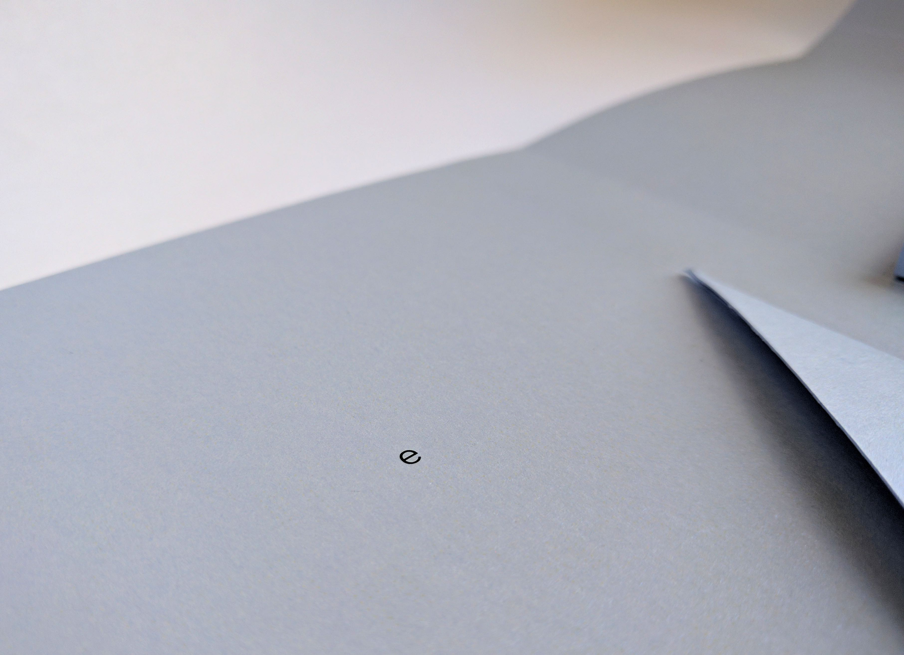
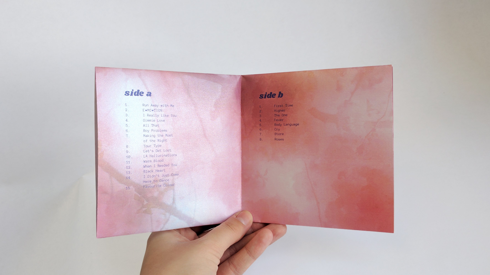
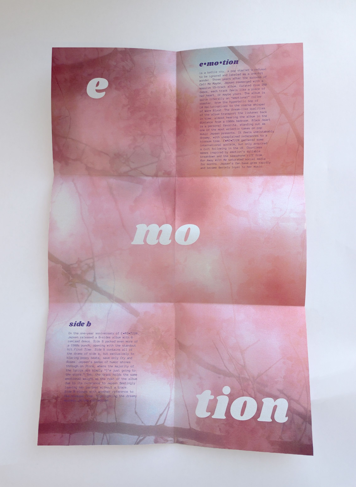
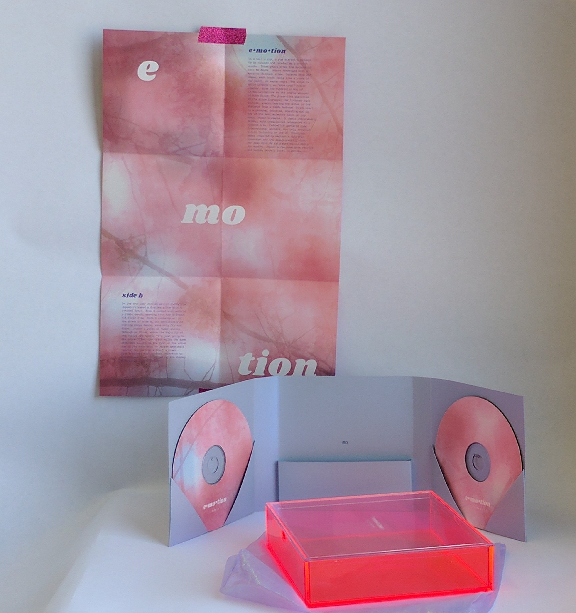

Carly Rae Jepsen is best known for her bubblegum pop hit Call Me Maybe, but her style has since evolved with her 2015 album Emotion. With heavy influences of 1980s pop, the album feels nostalgic and dreamy. Emotion was not a commercial success, but it garnered a strong cult following of loyal fans. A year after its release, Jepsen announced a b-sides album of Emotion outtakes as a gift to her fans.
This box set pairs the two albums in an iridescent, pearlescent, and neon packaging–representing the relationship between the soft and strong elements of her music. Much like Emotion itself, the packaging appears simply pretty at first glance, but its meaning is uncovered upon further inspection. The imagery is inspired by cherry blossoms, an unexplained reference on both albums, symbolizing Jepsen's offbeat take on pop themes. The typography mimics the dualities of Emotion, pairing a bold and rounded typeface with a thin monospace. The original album artwork is referenced in the syllable breakdown of E•MO•TION, the foundation for some of the countless fan memes the album inspired.







← Previous
All
Next →